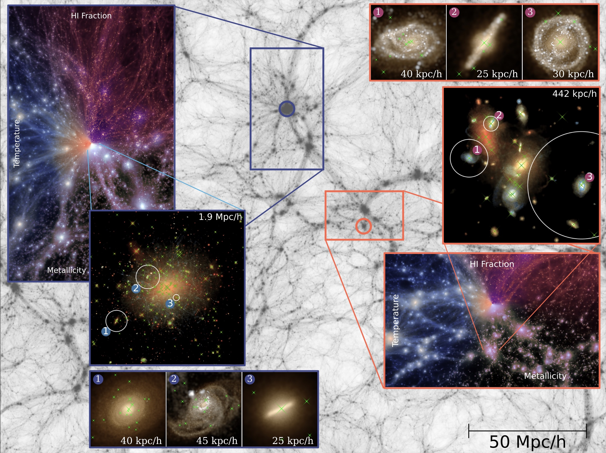

2025
The ASTRID Simulation at z=0
ASTRID is one of the largest hydrodynamical cosmological simulations evolved to $z=0$. It hosts $2\times5500^3$ particles in a box size of 250 Mpc/h per side. ASTRID features a large population of massive black holes (MBHs), ranging from $10^4$ to $10^{11}$ M$_\odot$, and implements a subgrid dynamical friction model to provide a better description of the MBH orbital evolution. This makes it a powerful tool to study the formation and evolution of MBHs in a cosmological context.
Read Paper →